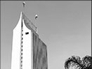
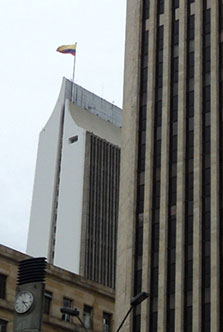
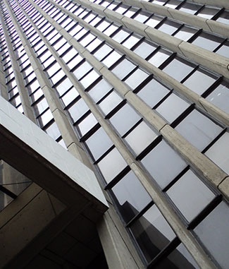
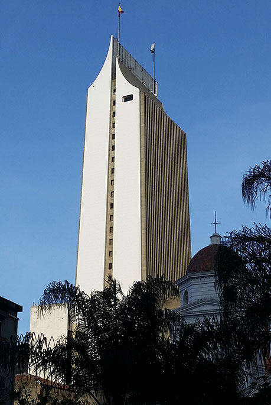

NOSOTROS
ARQUITECTOS E INGENIEROS:
Germán Samper, Jorge Martínez, Raúl Fajardo, Anival Saldarriaga y Jaime Muñoz Duque


HISTORIA
- UBICACIÓN: Calle 52 Nº 47-42 (Junin con La Playa)
- ÁREA CONSTRUIDA: 42,000 mt2
- NÚMERO DE PISOS: 36
- SÓTANOS: 3
- PARQUEADEROS: 150
- ASCENSORES: 9
CONSTRUCCIÓN
Desde 1968 / Hasta 1972


En 1967 Ridrigo Uribe Echavarria, el entonces gerente de la textilera, pensó en levantar un edificio para reemplazar la vieja edificación ubicada en la esquina de Junin con Colombia, que ya empezaba a resultar incomoda, y concentrar todas las oficinas de la empresa en un solo lugar que además tuviera previsto el crecimiento de la firma.



El jurado que estaba compuesto por los arquitectos PIETRO BELUFCHI, DIKEN CASTRO Y EL INGENIERO ALBERTO VÉLEZ ESCOBAR, anunció su selección con los argumentos de que ese diseño había ganado por lo sobrio, simbólico y por que su deseño arquitectónico no pasaria de moda. Fueron 12 millones de pesos los que recibieron los ganadores como premio por los planos.

El remate del edificio, por su parte, es una estructura metálica recubierta de concretro; y el que tenga la forma de "lanzadera", según aclaró Raúl Fajardo, no es más que una coincidencia porque nunca se pensó en ello.



SÍMBOLO DE LA CIUDAD

ARQUITECTOS
Las propuestas de diseño del edificio se entregaron un viernes, el sabado expusieron los proyectos y el lunes siguiente a las cinco de la tarde, RAÚL FAJARDO, quien se había asociado con GERMÁN SAMPER, ANÍBAL SALDARRIAGA, JORGE MANJARRÉS y el ingeniero Jaime Muñoz, recibieron la noticia de que habían sido seleccionados


El 2 de junio de 1969, comenzó la controvertida construcción del edificio
en medio de la expectativa que generó en unos y crítica por su altura, en otros, que finalmente fueron catalizados por el gerente de la compañia, quien argumentaba que al estar la ciudad localizada en un valle tan estrecho no era posible que creciera más en sentido horizontal y que por esto tenían que buscar con los edificios altos la solución.


De acuerdo con las apreciaciones del historiador Luis Fernando Molina Londoño la llegada de los rascacielos en el pais fue dada por la expasión económica del Estado, la industria, la banca y la población; cuyas edificaciones "tenian el triple propósito de servir como indicador de poder económico de quienes las patrocinaban, producir el máximo beneficio financiero y crear marcas urbanas nuevas, aprovechando el elemento altura"